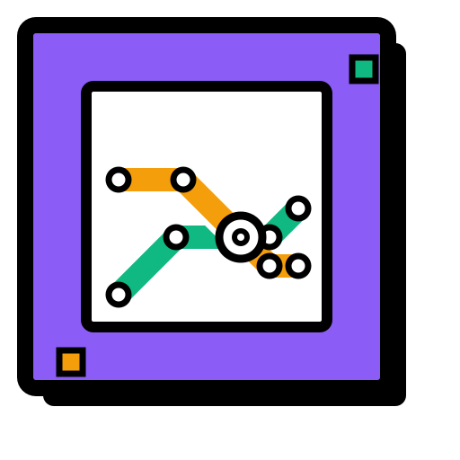

plugins/Metro/lines.yml
stops.yml
Metro 线网工坊建立在以下项目与社区的工作之上。数据的来源、绘制的章法、继续编辑的空间都来自它们；谨此致谢。
提供 lines.yml / stops.yml 的数据结构、站点体系与线路模型，是本工具一切解析工作的起点。
Rail Map Generator 与 Rail Map Painter 的绘制方法论与视觉风格，为本工具的排版提供了重要参考；导出的 RMP 存档也可以直接在其中继续美化。
本工具的作者：需求整理、配置解析、几何算法与渲染导出的实现，持续打磨细节体验。
清屿服务器玩家们与所有参与试用、反馈问题的朋友：你们的建议让这张图越来越好用。